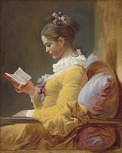

Literature is the art of the word. It employs written language in an aesthetic, creative, and artistic manner to express the human experience, reaching far beyond the simple transmission of everyday information. Through novels, poetry, short stories, and plays, literature recreates reality, manifests emotions, and constructs imaginary worlds. Unlike mythology—which may be tied to sacred beliefs—literature encompasses narratives of various genres and purposes, capable of influencing our consumption, our culture, and our habits.

Literature is a primary form of cultural preservation, as much of what we know today about ancient civilizations has been passed down through their works. Like religion, it influences people's way of life, perpetuating narratives and ideas that span generations and become part of a society's history. Often without even realizing it, people find reflections of themselves in literary works, identifying feelings and elements of their own reality. In this way, behaviors, customs, and fantasies continue to be reproduced and transformed over time, shaped by influences from different parts of the world. It is no wonder that many say one of the best ways to travel the world is through reading: literature broadens horizons, enriches cultural heritage, and contributes to a people's social life.
Authors
William Shakespeare
He was an English poet, playwright, and actor. He is regarded as the greatest writer in the English language and considered by many to be the greatest playwright in history. He is frequently called England's national poet and the "Bard of Avon." His works have influenced various aspects of pop culture, such as The Lion King, 10 Things I Hate About You, House of Cards, She's the Man, Star Wars, Breaking Bad, Dune, and others.
Grimm Brothers
Jacob Grimm (1785–1863) and Wilhelm Grimm (1786–1859) were two German scholars, linguists, and writers born in Hanau. They became world-renowned for collecting, recording, and publishing folktales and legends from the Germanic oral tradition. Their works have inspired various elements of contemporary pop culture, including Disney princess films (such as Tangled, Snow White, and Cinderella), The Lord of the Rings, Dark Souls, Corpse Bride, Edward Scissorhands, and more.
Chrétien de Troyes
He was a French poet and troubadour from the late 12th century. He was one of the earliest authors of chivalric romances and is also considered the first great novelist in the French language. His works inspired literature throughout Western Europe during the Middle Ages. His output has influenced works such as Shrek, Sonic and the Black Knight, Star Wars, The Lord of the Rings, Game of Thrones, The Legend of Zelda, Indiana Jones, Berserk, and others.
Especific Works
Kathasaritsagara
It is a famous 11th-century collection of Indian legends and folktales, retold in Sanskrit by the Shaivite author Somadeva, from Kashmir. The book has influenced various well-known works, such as One Piece, Dune, Star Wars, The Lord of the Rings, Jujutsu Kaisen, Naruto, Harry Potter, and others.
Strange Tales from a Chinese Studio
It is a collection of classic Chinese stories by the Qing dynasty writer Pu Songling, comprising approximately 500 tales—or "wondrous stories"—in the zhiguai and chuanqi styles, which, according to some critics, served to implicitly critique the problems of society. It has influenced various works, such as InuYasha, Naruto, Kamisama Kiss, The Apothecary Diaries, Genshin Impact, and others.
The Divine Comedy
It is an allegorical, didactic, and eschatological poem—with epic and theological dimensions—from both Italian and world literature. Written by Dante Alighieri in the 14th century, it explores the foundations of the Christian faith and is divided into three parts: Inferno (Hell), Purgatorio (Purgatory), and Paradiso (Paradise). Many works have been influenced by this book, including Spirited Away, The Chronicles of Narnia, The Sandman, The Seven Deadly Sins, Saint Seiya (Knights of the Zodiac), and Fullmetal Alchemist, among others.
Tristan and Isolde
It is one of the most famous medieval legends from the Celtic tradition and the Arthurian Cycle, solidified in the 12th century by authors such as Béroul and Thomas of Britain. This work completely transformed the modern conception of "cliché" romances and went on to influence a wide array of other works—including Wuthering Heights, League of Legends, virtually every story inspired by Shakespeare’s Romeo and Juliet or Chrétien de Troyes’ Lancelot, the Knight of the Cart, as well as Game of Thrones, Titanic, and many others.
The Self-Taught Philosopher
It is an Arabic philosophical novel and an allegorical tale written by Ibn Tufail (c. 1105–1185) in the early 12th century in al-Andalus. The book influenced the creation of works such as Robinson Crusoe, Frankenstein, Tarzan, The Jungle Book (Mowgli), The Little Prince, The Mysterious Island, and others.
Don Quixote
The Ingenious Gentleman Don Quixote of La Mancha is a Spanish novel by Miguel de Cervantes. Originally published in two parts—in 1605 and 1615—the novel is considered a foundational work of Western literature and the first modern novel. It has influenced works such as Sherlock Holmes, Star Wars, The Lord of the Rings, Fight Club, Deadpool, Shrek, Batman, and others.